CANTAB Connect
- Introduction
- Data transfer protocol for professionals
- As a professional: do I need to do anything on a daily basis or all N days (for each patient using a specific device / app)?
- As a professional: do I need to do anything after each individual period of device / app use ended (for each patient using a specific device / app)?
- As a professional: do I need to do anything after the full periods of use of a specific device / app ends (for each patient using a specific device / app)?
- Original device setup and pairing
- Device pre-setup and configuration
- Troubleshooting/FAQ
- Returned device processing and cleaning / an application use period for a participant has ended
- Device recycling and provisioning
Introduction
CANTAB Connect is an iPad mobile application that has two components: (i) an administration area for clinical staff to login and create new participants as part of an ongoing study and to add those participants to the CANTAB ThinkFast app; and (ii) a suite of cognitive assessments designed to measure episodic memory, executive function and attention. CANTAB Connect should be used with each participant on their first visit to the clinical site to administer three cognitive tests and to help in activating the participant’s ThinkFast application.
How does this technology look?
| 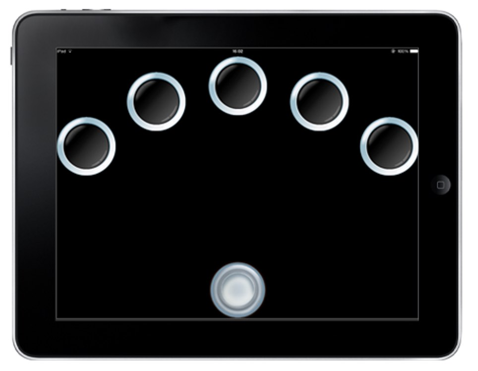 |  |
| Figure 1: A reactive time assessments. | Figure 2: Adding a participant before a test. |
What does it record?
CANTAB Connect records responses to specific tests that measure different aspects of cognition, such as visual memory through a gameful task (Figure 3) or the time taken to react, find and match a box to measure working memory (Figure 4).
| 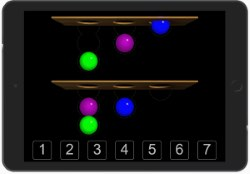 |  |
| Figure 3: The One Touch Stockings Task. | Figure 4: The Spatial Working Memory Task. |
How is it used?
CANTAB Connect is used when a participant first visits a study site to gain a baseline measurement of their cognition and onboard them into the associated take-home cognitive app, ThinkFast.
Data transfer protocol for professionals
As a professional: do I need to do anything on a daily basis or all N days (for each patient using a specific device / app)?
Yes. Prior to patient visiting the study site you should setup the iPad and become familiar with the CANTAB Connect application as outlined below. You will have access to a training site, where you can familiarise yourself with the participant detail screens and run the CANTAB tests – the sessions collected here will be kept separate from the testing sessions you complete with the participants.
Setting up the iPad
CANTAB Connect requires that the iPad is positioned horizontally (Figure N) and placed on the provided stand at waist height for patients to easily complete cognitive tasks. The iPad should also be plugged into a mains connection. To do this:
- Place the stand with the three rubber feet flat against the surface of the table.
- Place the iPad on the stand with the bottom of the iPad resting on the ridge and the power and volume buttons should be on the top left corner of device.
- Ensure that the iPad’s home button is located on the right-hand side and that the iPad is in a landscape position as below:
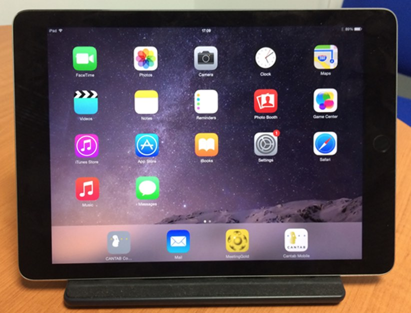
Setting up CANTAB Connect
Once you receive the provided iPads please unbox it, set it up and install CANTAB as follows:
- Take the iPad out of the box and turn on
- Select your language
- Set your location
- Connect to Wi-Fi
- Select ‘Enable Location Services’
- Select ‘Set-up as new iPad’
- Apple ID – Press ‘Skip This Step’ and then ‘Don’t use’
- Agree to the terms and conditions
- Passcode - Press ‘Don’t Add Passcode’ and then ‘Continue’
- Siri - Press ‘Don’t use Siri’
- Diagnostics – Press ‘Don’t Send’
- Tap ‘Get Started’
- Go to Settings: 1. Press ‘General’ on the left-hand menu to get to the ‘General Settings Tab’. 2. On the General tab press ‘Software Update’ and ensure that the latest software is installed. 3. On the General tab ensure that ‘Multitasking Gestures’ are turned off. 4. On the General tab set ‘Auto-Lock’ to 15 minutes 5. On the General tab press ‘Date and Time’ and ensure that ‘Set Automatically’ is on. 6. Press ‘Control Center’ on the left-hand menu and turn off ‘Access on Lock Screen’ and ‘Access within Apps‘. 7. Press ‘Notifications’ on the left-hand and ensure all notifications are turned off. 8. On the ‘Notifications’ tab to go into each of the apps under ‘INCLUDE’ (e.g. App Store, Mail, etc.) and ensure that all notifications are turned off. As the notifications are turned off the different apps will move from ‘INCLUDE’ to ‘DO NOT INCLUDE’. Check that all the apps have moved to ‘DO NOT INCLUDE’. 9. Press ‘Safari’ on the left-hand menu and then press ‘Passwords & AutoFill’. Ensure that the option for ‘Names and Password’ is turned off.
- Open Safari and enter the URL https://app.cantab.com/rater
- Create a home screen shortcut for the CANTAB application by pressing the up arrow next to the URL and then select Add to Home Screen.
- On the home screen press and hold the Cantab icon created above until the icons shake and then drag the icon to bottom of screen. Press home button (to stop icons shaking).
- Tap the Cantab icon and wait for the installation to complete. Use the buttons on the side of the iPad to ensure that the volume is set to a suitable level. Shut down the iPad. 1. Setting the iPad orientation: For optimised testing, it is important to ensure that the iPad orientation is set correctly. To do this:
- Go to Settings
- On the General tab under ‘USE SIDE SWITCH TO:’ select ‘Lock Rotation’.
- Hold the iPad in a landscape position with the home button on the right-hand side. Keep the iPad in this position and set the switch on the side of the iPad into the locked position.
- The iPad should now be locked in a landscape orientation. Rotate the iPad to check that iPad screen does not change orientation.
Note: it is very important that the iPad is set to the correct orientation before using Cantab Connect.
Creating a CANTAB Account
Once the application is downloaded, please contact CANTAB to register an account at suppot@cantab.com. Once an account is registered, please login to the following screen:
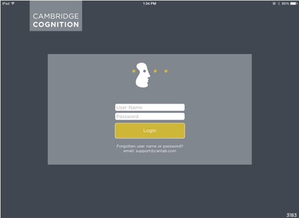
Application Overview
This section describes the key features of the CANTAB Connect application:
- Initial Study site: choose “idea-fast”
When you log into the platform you will select Training sites (if you are familiarising yourself with the Connect application) or your clinic site (if you are administering the assessments to a participant). There are separate sites for the Baseline testing completed on the iPad and a site for adding a participant to the ThinkFAST app. The ThinkFAST site should not be accessed on the iPad – this should be accessed via the admin application – instructions are provided below. When logging in select IDEA-FAST and your Site (or training if you are completing a practice session with no participant present). Active sites will include the status ‘Active’
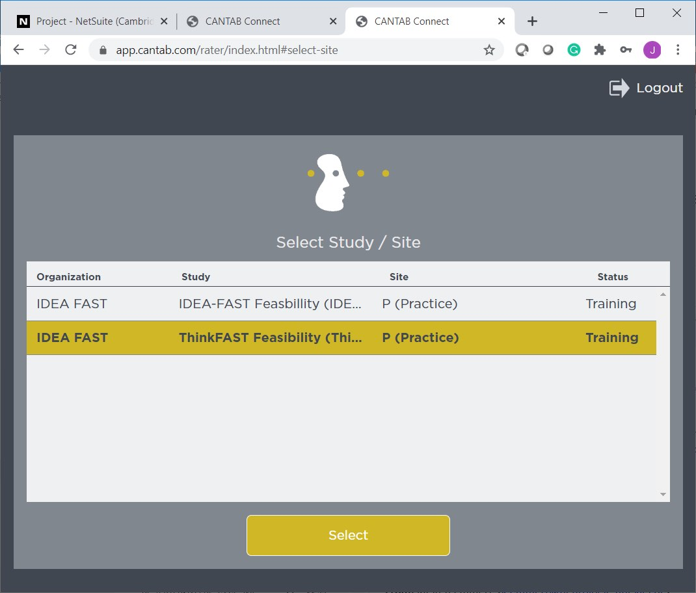
- System status (preparing offline vs offline ready)
Once you have logged into the platform, in the top right-hand corner of the screen, ensure Online (offline ready) is displayed before you run a test session. You may notice this can take a few moments to update.
We recommend all testing sessions are completed online, with the iPad connected to Wi-Fi. This ensures the end of the testing session, and the data are automatically transferred to Cambridge Cognition.
- Adding subjects for testing - iPad Configuration
To add the details of a participant for the iPad testing, from the main screen, tap on Test a new Participant as illustrated below:
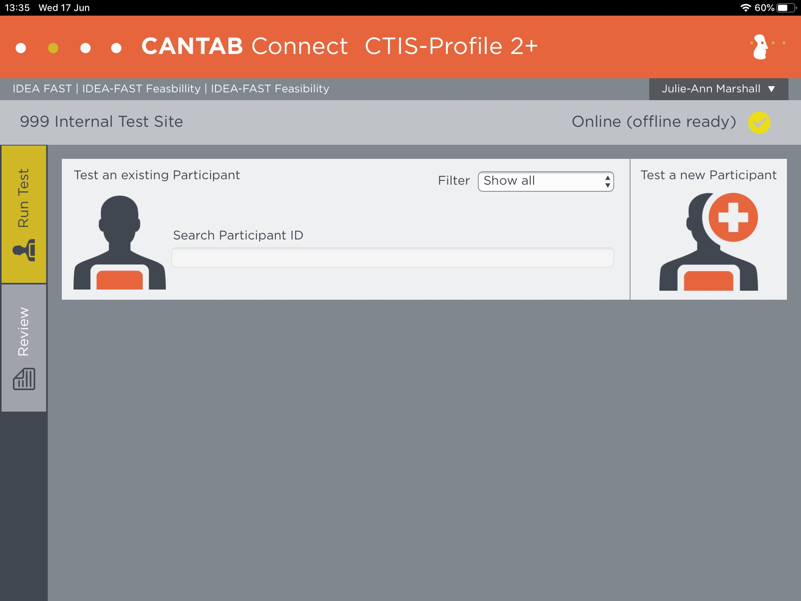Figure N: The run test screen within CANTAB Connect.
The Add New Participant screen will be displayed, enter the following details:
- Connect Participant ID (a sequential number assigned by site to each participant, e.g. 001, 002, 003)
- Language – select the language that the Participant requires for the test voiceover instructions
- IDEA-FAST Participant ID – the 7 character ID for the participant
- Level of Education – selecting from the list of available options
The remaining two fields, Visit Schedule and Status should not be updated.
Once you have entered all required details tap on Save to create the participant as illustrated below:
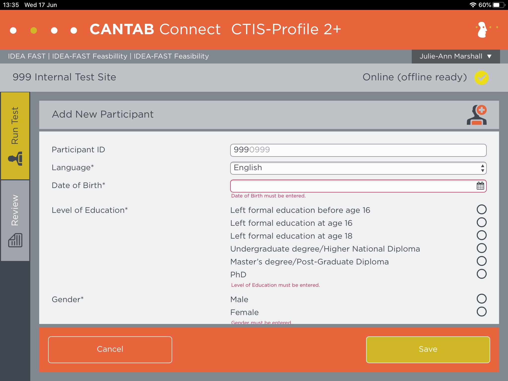
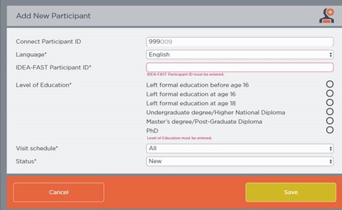
- Testing a Subject
After the Participant details have been entered in step 3, the Participant details will be displayed on screen. You can check these details are correct, if you need to make any changes or updates to the information entered tap Edit. When you make any changes to the details previously entered you will be required to enter a reason for the change.
To begin the assessments, tap on Start Test.
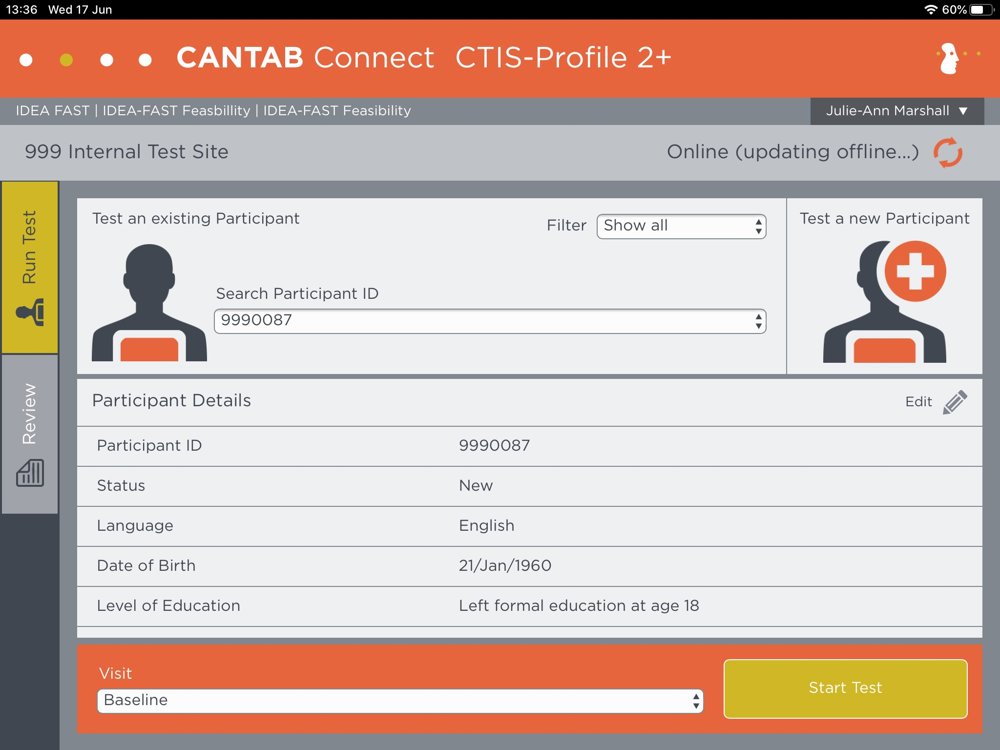
The first test start screen will be displayed, the name of the test is shown in the bottom right corner of the screen. The Participant should tap on Next to being the assessment. The voiceover instructions will start in the correct language for the Participant (as selected in step 3).
At the end of each assessment a similar screen will be displayed with the name of the next test to be administered.
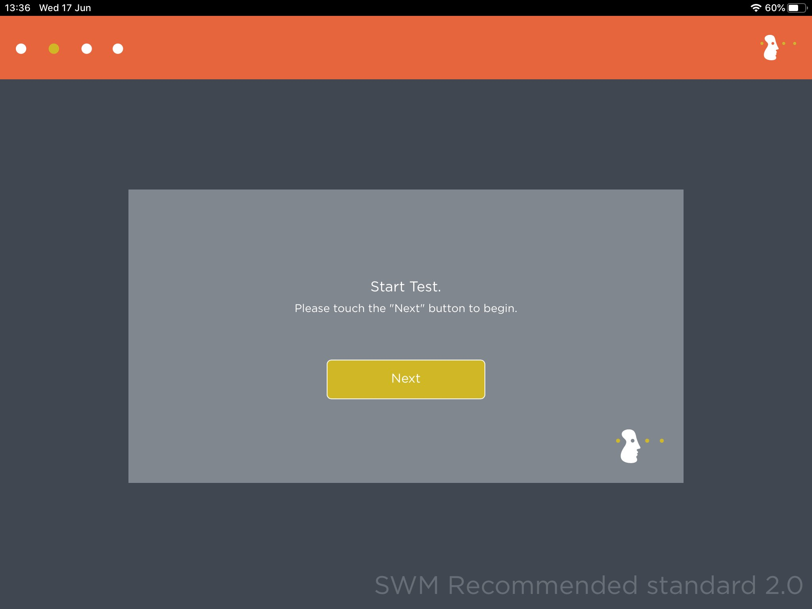
- End of the assessments
At the end of the assessments, the testing complete screen will be displayed. At this point the participant should pass the iPad back to the clinic staff. The final screen requires the clinic team member who logged into the Platform to being the testing session to enter their password:
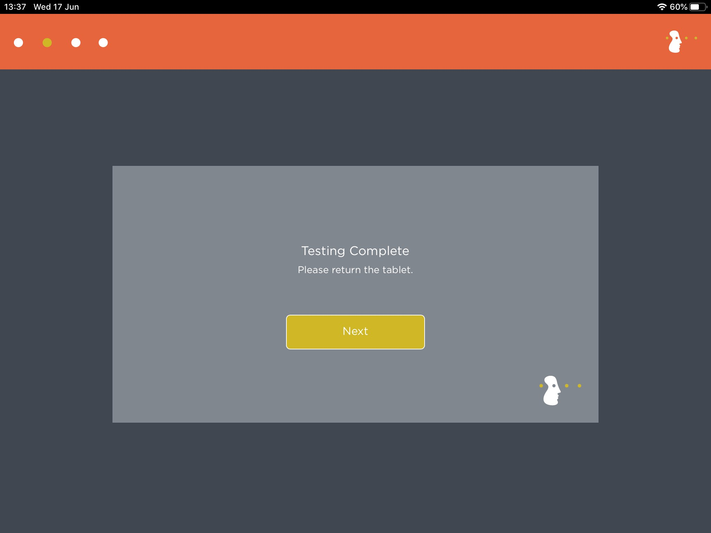
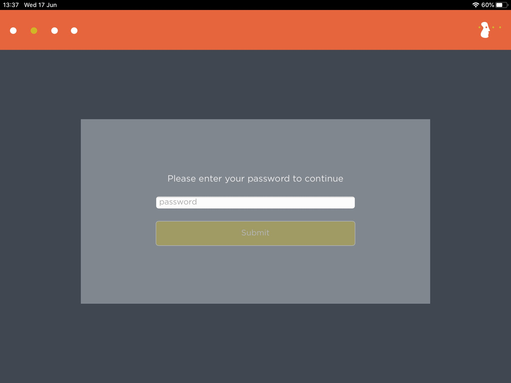
Once you have entered your password the data collected as part of the testing session will be uploaded (if the iPad is connected to Wi-Fi). You will then return to the main screen.
Familiarising with Cognitive Tasks
The CANTAB tasks included are Spatial Working Memory (SWM), Reaction Time (RTI) and One-Touch Stockings of Cambridge (OTS).
Spatial Working Memory (SWM)
SWM requires retention and manipulation of visuospatial information. This test has notable executive function demands, and measures strategy use as well as errors. In this task the participant has to search for tokens hidden in boxes. The participant must touch a box to open the box to reveal either a yellow token or an empty box. Once the participant has found a yellow token, they must touch the outline of the right-hand side of the screen to ‘store’ it. The participant must then continue searching through the boxes until all of the tokens have been found.
Voiceover instructions introduce the task and explain how the task is completed. The participant is informed that ‘the tokens will never be in the same box twice, so do not go back to a box if you have already found a token there’. The participant will then be asked to complete 2 practice trials, each containing 3 boxes/ tokens. If the participant returns to a box where a token has already been found, they are reminded that the tokens will never be in the same box twice, so do not go back to a box if you have already found a token there. After the participant has completed the 2 training problems, the voiceovers instructions introduce the assessed phase of the task during which the participant will be presented with 3 trials to complete, 1 containing 4 tokens, 1 containing 6 tokens and a final trial containing 8 tokens.
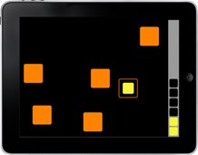
Reaction Time (RTI)
RTI provides assays of motor and mental response speeds, as well as measures of movement time, reaction time and response accuracy. In this five-choice reaction time test, the participant will see five circles at the top of the screen and a button at the bottom of the screen. For each trial, the participant must hold down the button at the bottom of the screen until one of the five circles above flashes yellow. Once this has occurred, the participant must then release their finger and touch the circle which just flashed, as quickly as possible. Voiceover instructions introduce the task and explain how the task is completed. The subject is informed that ‘Both speed and accuracy are important, so go as quickly as you can, whilst trying not to make any mistakes and that ‘You will need to use the index finger of your dominant hand only: do not use two hands’. The subject will then be asked to practice holding the down the button at the bottom of the screen and is again informed that they should hold this button down until a yellow spot flashes in one of the circles above. The subject will then be presented with 10 practice trials, 2 from each of the 5 locations at the top of the screen, in a randomised order.
After the participant has completed the 10 training problems, the voiceovers instructions introduce the assessed phase of the task during which the participant will be presented with 30 trials, 6 from each of the 5 locations at the top of the screen, in a randomised order to complete.
One-Touch Stockings of Cambridge (OTS)
The One Touch Stockings of Cambridge (OTS) task is a measure of executive function; planning and working memory. The participant is presented with two displays of ‘stockings’ each containing three coloured balls. There is a row of numbered boxes from 1 - 7 along the bottom of the screen. For each trial, the participant must mentally calculate how many moves are required to in order to match the bottom arrays of stockings to the top array of stockings. They must then touch the numbered box along the bottom of the screen corresponding to the number of moves they believe the problem can be solved in.

Voiceover instructions introduce the task and explain how the task is completed. The rules of the task are also presented and the participant is told that ‘ You cannot move a ball that is underneath another one’ and ‘You cannot move a ball into thin air; you have to move it into another free pocket, where it will drop to the bottom’. The participant will then be presented with a series of 3 mandatory training problems. The first two training problems will show the participant how to complete the presented problem before asking them to select the correct corresponding number. During the final training problem, the participant will be asked ‘What is the minimum number of moves I need to make? Touch one of the boxes below’ prior to being shown the solution to the problem. After the participant has completed the 3 training problems, the voiceovers instructions introduce the assessed phase of the task during which the participant will be presented with 15 problems of varying levels of difficulty to complete.
Adding subjects for testing - ThinkFAST app
To link the ThinkFAST app with the participant, the participant details msut be entered in the Connect connect admin application (this is not completed on the iPad).
Open the following link on your laptop/PC: https://app.cantab.com/admin/
Log in using the login details you have been provided
When logged in, you will see this screen (note this is an example from the practice site, you will see your site for participants when logged in):
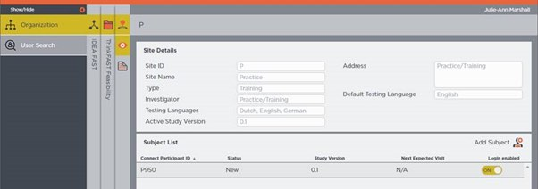
Select Add Subject
The Add New Subject window will be displayed, enter the required details.
Note when entering details for actual participants please use the same Connect Participant ID as entered into the iPad for the cognitive testing session.
Select the correct language for the participant
Enter the date of the Day 1 ThinkFAST Testing
Enter the IDEA-FAST Participant ID (7 characters)
Visit Schedule and Status should not be updated.
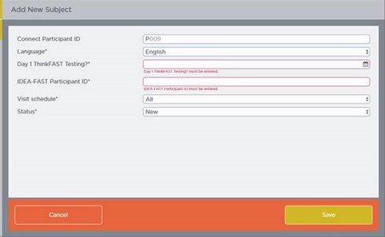
Tap Save to create the participant in the admin application
Navigate back to the Subject List by selecting cancel
From the subject list, select the participant you created and double click
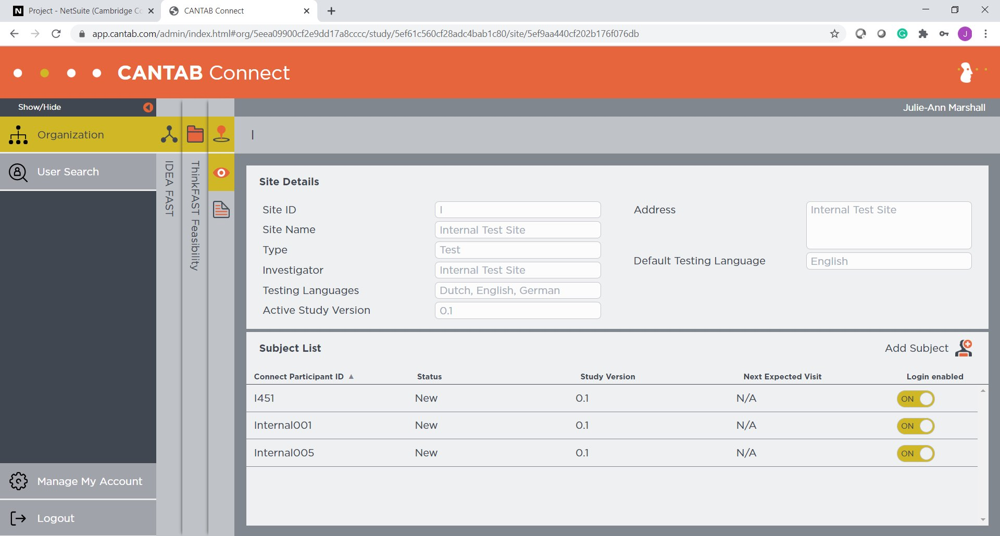
The details of the participant will be displayed, select activate by code to enter the code displayed on the participants study phone
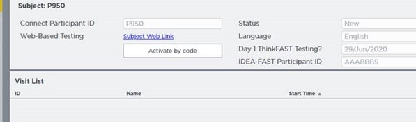
Note the code displayed on the participants phone is valid for 2 minutes, so it is recommended to enter these details in advance of generating the code on the participants phone.
Patient’s First Visit
On the patient’s first visit to a study site you should: (i) add them for “testing” in CANTAB Connect; (ii) complete the initial cognitive tasks; (iii) add the participant to the CANTAB Connect admin application in the ThinkFAST site and (iiii) generate an activation code to onboard them into the ThinkFast mobile application on their personal smartphone as outlined above. Detailed instructions for the connecting with CANTAB ThinkFast are provided below:
Creating a User Account (for professionals)
You will need to log into the CANTAB Connect admin application via your laptop/PC and find the entry that was created by CANTAB for this participant as outlined below:
Figure N: How a participant appears in the CANTAB Connection admin application.
Ask the participant to open the CANTAB ThinkFast mobile application on their personal smartphone. If they are not logged in, a screen will appear with a 6-digit code as illustrated below.
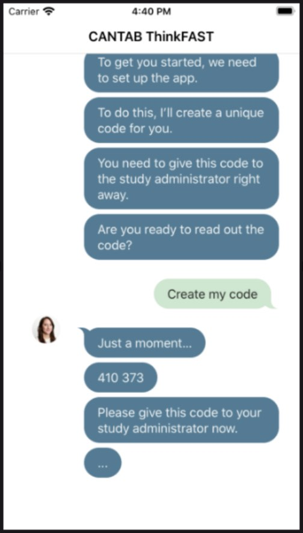
Figure N: Once you open CANTAB ThinkFast, you can request a new code.
Follow the steps in section 6 above select “Activate by Code” and enter the 6-digit code that was generated from the mobile application on the participant’s phone. This will link user you created in CANTAB Connect app to the participant’s mobile smartphone.
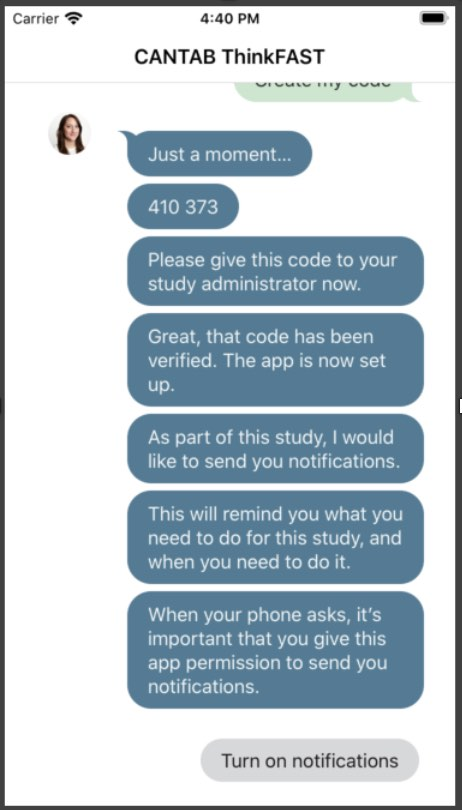
Figure N: You should use this code generated by the chat service to authenticate with the CANTAB iPad application.
As a professional: do I need to do anything after each individual period of device / app use ended (for each patient using a specific device / app)?
Not applicable.
As a professional: do I need to do anything after the full periods of use of a specific device / app ends (for each patient using a specific device / app)?
Not applicable.
Original device setup and pairing
If handling a device and it arrives new: what needs doing before it gets sent to a study centre?
Put into inventory management?
Not applicable.
Needs firmware update?
Not applicable.
Pairing with a companion application?
Not applicable.
Any account setup required?
Yes. Each study site will receive 2 iPads that require downloading and installing the CANTAB Connect application as outlined below.
You will also require access to the Connect admin application (web-app) to add participant details to the Connect system (this cannot be completed on an iPad) https://app.cantab.com/admin/
Needs pairing with hub device?
Not applicable.
Any assembly required?
Yes. See Setting up CANTAB Connect above.
Package together with which other devices for which study centre?
Not applicable.
If handling an application: what needs doing before a study centre can use the app?
Do we need to get accounts from the application provider?
Yes. Administrator accounts for CANTAB Connect are accessible for each study site and accessible through the encrypted vault
Can the software be downloaded, or do we need to make it available?
Yes.
Downloading and Installing CANTAB
The CANTAB Connection mobile application should be installed prior to configuring the iPad orientation as outlined above.
Logging In
Each clinical staff member at the study site must create an individual account to log into the CANTAB Connect application. Please contact your study site lead for more details on who to email to have an account setup for you.
Does it need to be installed on the hub devices?
Not applicable.
Do we need to activate study accounts?
No. Site specific accounts have been pre-setup as outlined above.
Device pre-setup and configuration
What sort of a device / application is this, what is it for and how does it work?
CANTAB Connect is an application for running cognitive tests with patients during a site visit (on the iPad), and to manage multiple patients across a study, and to authenticate patients into the take-home ThinkFast mobile application via the Connect admin application (web-based app)
What has already been done in pre-setup for the device or application?
Not applicable.
What will need to be done before a patient can start using this?
Any account setup required?
Yes. You will receive a username and initial password to log into the iPad. Each user will have a separate account and will need to use this each time you log into the iPad. If you forget your password, then please email support@cantab.com to request a password reset.
Needs pairing with hub-device?
Not applicable.
Any configuration / assembly required?
Yes. The iPad must be placed in a landscape position, possibly on a stand to operate correctly. Instructions for how to do this are detailed above
Troubleshooting/FAQ
The device / app seems to have stopped working: what should I do?
If the CANTAB Connect application stops working, please close and reopen the application.
Battery?
Please ensure that the iPad remains connected to the mains power using the lightening cable and charger. Ensure that the iPad is charged to at least 50% prior to each testing session.
Sounds?
There are voiceover instructions for the CANTAB tasks. Please ensure that the volume level is set so that the voiceover is audible. Sound can be increased or decreased by tapping the buttons on the right side of the iPad.
Connectivity issues?
Although the CANTAB assessments can be run without being connected to Wi-Fi, an internet connection is required for the data collected to be automatically transferred and backed up on Cambridge Cognition’s secure servers. When Wi-Fi is not available, the data will be stored locally on the iPad in a secure encrypted format and will be transferred to Cambridge Cognition as soon as the iPad is connected to Wi-Fi.
It is recommended that the iPad is connected to the Wi-Fi during each assessment. However, if this is not possible the user should ensure that the tablet is connected to Wi-Fi as regularly as possible so that subject data is transferred to Cambridge Cognition.
Need to restart or log in again?
Not applicable.
Using the device / app is uncomfortable to me: what can I do?
Adjust wear style?
Not applicable.
Adjust usage pattern?
Not applicable.
Returned device processing and cleaning / an application use period for a participant has ended
Trigger Data Transfer Protocols?
The iPad stores data securely in an encrypted database on the device when it is offline. When the device goes online (i.e. when “Online” is displayed at the top right of the Test Subject screen), data is automatically transferred via HTTPS to a secure server.
Where should the device be returned?
N/A. Participants will use their personal phone to install and use the CANTAB ThinkFAST application.
Device recycling and provisioning
How will the devices and applications be supplied to the study site?
2 iPads will be mailed to each study site. The CANTAB Connection iPad applications will be made available to each study site using their own unique credentials as outlined in application overview above.
What to do with devices once the study site is entirely done with them?
The iPads should be returned to Newcastle University following completion of the Feasibility Study.